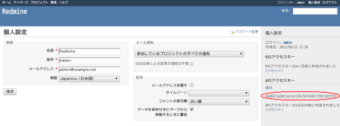
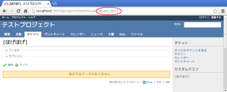
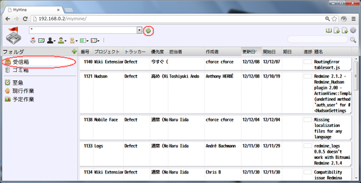

MyMine ヘルプ
はじめに
MyMine は Redmine のチケットを見やすく表示および管理するためのWebアプリです。 Redmine の REST 機能を使用する外部プラグインとして動作します。
動作環境
Webサーバ:
Apache推奨。本体はHTMLコンテツなのでサーバは選びません。
ブラウザ:
Chrome推奨。HTML5対応のブラウザなら動くと思いますが未検証です。
導入
Redmineと同じサーバへの導入
配布アーカイブ内の mymine/ ディレクトリを Redmine をホストしている Webサーバにコピーするだけです。 コピー先はルート以外でも構いません。
Redmineと異るサーバへの導入
Redmineをホストしているサーバが自身の管理化に無い場合は、別の Webサーバに導入する事ができます。 この場合、MyMine を導入するWebサーバは Redmine のサーバへのリバースプロキシとして 動作する必要が有ります。
Apacheの設定例
Apacheを使用したプロキシサーバの設定例を示します。
環境設定
ブラウザでMyMineのページを表示します。
画面右上の
をクリックし環境設定ダイアログを表示します。
設定画面の説明にしたがって項目を設定します。
「保存」ボタンをクリックします。(画面最下部に有ります。)
APIアクセスキー
環境設定のAPIアクセスキーは Redmine がユーザを特定する為の物で Redmine の個人設定画面からから取得できます。

カスタムフィルタ
環境設定のカスタムフィルタは Redmine の REST 機能が提供する任意のクエリを指定できます。 通常は query_id パラメータを指定して Redmine のカスタムクエリを指定します。
カスタムクエリのIDは Redmine でカスタムクエリを表示した時のURLから分かります。

機能
チケットの取得
Redmine からチケットを取得して表示するには以下の操作をします。
受信箱 をクリックします。
をクリックします。

ページの表示直後には既にこの状態になっています。
フィルタ条件
取得するチケットを制限するにはフィルタを指定してからチケットを取得します。
上段のセレクタはプロジェクトを選択します。
チケットの表示
フォルダ
検索
エクスポートとインポート
エクスポート
インポート
 をクリックし環境設定ダイアログを表示します。 をクリックし環境設定ダイアログを表示します。
をクリックし環境設定ダイアログを表示します。 をクリックし環境設定ダイアログを表示します。 受信箱 をクリックします。
受信箱 をクリックします。